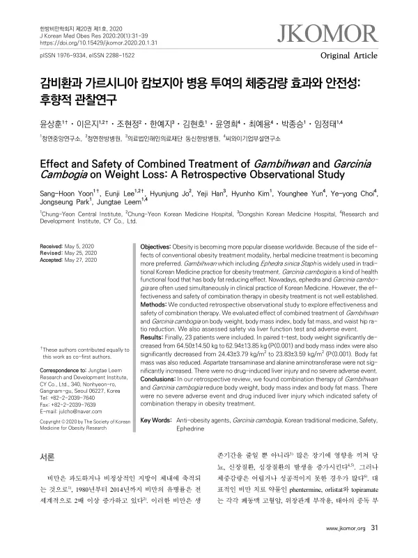

Effect and Safety of Combined Treatment of Gambihwan and Garcinia Cambogia on Weight Loss: A Retrospective Observational Study
Yoon SH, Lee E, Jo H, Han Y, Kim H, Yun Y, Choi Yy, Park J, Leem J
Journal of Korean Medicine for Obesity Research 20(1):31-39

첫 장 · 오픈액세스First page · open access
논문 소개Summary
비만 치료제인 펜터민과 오르리스타트, 토피라메이트에는 각각 폐동맥 고혈압과 위장관 부작용, 태아 독성이 따릅니다. 그래서 한약이 대안으로 쓰이는데, 마황을 주된 약재로 삼는 감비환이 그중 하나입니다. 가르시니아 캄보지아는 체지방 감소 기능성을 인정받은 건강기능식품입니다. 진료 현장에서는 이 둘을 함께 쓰는 일이 잦은데, 병용의 유효성과 안전성을 확인한 자료는 없었습니다.
한 달 이상 두 가지를 함께 복용한 성인 27명의 진료기록을 후향적으로 검토했습니다. 종료 시점 체중이 빠진 3명과 복용 기간에 잦은 음주가 확인된 1명을 빼고 23명이 분석에 들어갔습니다. 여성이 20명이었고 평균 나이는 37.39세였습니다. 모두 한 달분을 복용했고 그 이상 쓴 사람은 없었습니다.
체중은 64.50킬로그램에서 62.94킬로그램으로, 체질량지수는 24.43에서 23.83으로 줄었고 둘 다 유의했습니다. 체지방량도 20.71킬로그램에서 19.84킬로그램으로 줄었습니다. 그러나 골격근량과 허리엉덩이둘레비는 바뀌지 않았습니다. 한 달의 감량폭이 체중 1.56킬로그램이라는 점을 함께 읽어야 합니다.
안전성 쪽이 이 연구의 무게중심입니다. 아스파르테이트아미노전달효소와 알라닌아미노전달효소는 평균적으로 유의하게 변하지 않았습니다. 개별 자료를 보면 정상 상한을 넘어선 사례가 여섯 건 있었으나 정상 상한의 두 배를 넘은 사람은 없어 약인성 간손상에 해당하는 경우는 없었고 증상도 없었습니다. 부작용은 손떨림과 두근거림 두 명, 불면 두 명으로 발생률 17.3%였습니다. 모두 1등급의 가벼운 정도였고 인과성은 개연성 있음으로 판정되었습니다.
저자들이 든 한계는 후향적 설계라 부작용의 빈도와 중증도가 실제보다 적게 잡혔을 수 있다는 점, 식이와 운동을 통제하지도 정량화하지도 못한 점, 복용이 한 달 이내라 장기 투여를 알 수 없는 점, 주 2회 이상 음주자를 뺐으므로 음주가 미치는 영향을 알 수 없는 점, 그리고 간기능 지표가 두 가지뿐이었다는 점입니다.
The obesity drugs phentermine, orlistat and topiramate carry, respectively, pulmonary hypertension, gastrointestinal adverse effects and fetal toxicity. Herbal medicine is therefore used as an alternative, and Gambihwan — built around Ephedra sinica — is one such prescription. Garcinia cambogia is a health functional food approved for body-fat reduction. The two are frequently combined in practice, yet no data existed on the effectiveness and safety of that combination.
Medical records of 27 adults who had taken both for at least a month were reviewed retrospectively. Excluding three with missing end-of-treatment weight and one with frequent alcohol use during the period, 23 entered the analysis: 20 women, mean age 37.39 years. All took a one-month supply and none exceeded it.
Body weight fell from 64.50 to 62.94 kg and body mass index from 24.43 to 23.83, both significantly. Body fat mass also fell, from 20.71 to 19.84 kg. Skeletal muscle mass and the waist-hip ratio, however, did not change. The scale of the reduction — 1.56 kg over a month — should be read alongside these figures.
Safety is where the study's weight lies. Aspartate and alanine aminotransferase did not change significantly on average. Individual records showed six instances rising above the upper limit of normal, but none exceeded twice that limit, so no case met the definition of drug-induced liver injury, and none was symptomatic. Adverse effects were hand tremor and palpitation in two participants and insomnia in two, an incidence of 17.3%. All were grade 1 in severity and causality was assessed as probable.
The authors' limitations: the retrospective design may have underestimated the frequency and severity of adverse effects; diet and exercise were neither controlled nor quantified; treatment lasted under a month so nothing can be said about long-term use; those drinking twice weekly or more were excluded, so the effect of alcohol is unknown; and only two liver function indices were available.
인용Cite
Yoon SH, Lee E, Jo H, Han Y, Kim H, Yun Y, Choi Yy, Park J, Leem J. Effect and Safety of Combined Treatment of Gambihwan and Garcinia Cambogia on Weight Loss: A Retrospective Observational Study. Journal of Korean Medicine for Obesity Research. 2020;20(1):31-39. doi:10.15429/jkomor.2020.20.1.31